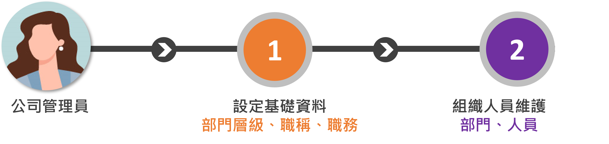
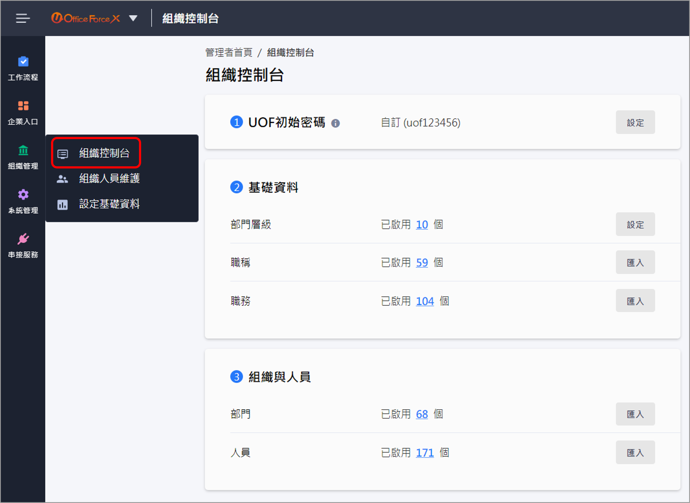

組織控制台-快速建立組織
一、如何快速建立組織與人員¶
公司管理員 在建立組織與人員資料之前，需要整理許多組織基礎資料建檔入系統中使用，ex.部門、職務、職級..等主檔資料，您可以選擇透過[組織控制台]或[各項主檔維護功能]，進行維護資料，以下針對此兩種維護模式行說明：
- 組織控制台：集結所有必要組織基礎資料的匯入功能與摘要筆數資訊於同一個維護頁面，免去切換不同主檔維護頁面的時間，幫助公司管理員可以在單一頁面可以匯入所有的組織基礎資料，即可快速完成這些基礎設定；您也可以透過[組織控制台]前往至各主檔的維護介面。
- 各項主檔維護功能：公司管理員也可以在前往各項主檔維護功能，進行資料維護的操作，ex. 組織人員維護(部門/人員)、設定基礎資料(部門層級/職稱/職務)；在主檔頁面中，您可以看到更詳細的資料列表，且可以進行單筆資料的新增/修改/刪除等操作。
二、從[組織控制台]著手建立¶
公司管理員 進入組織控制台時，請依照1、2、3步驟完成設定，避免遺漏重要資料，造成後續步驟無法順利建置。
- 預設密碼：決定使用者登入系統時要啟用的驗證方式，提供[UOF驗證]、[本地端AD]和[Azure AD]等驗證方式。
- 基礎資料：部門層級、職稱、職務必須維護，否則後續無法進行組織與人員設定；職務可依組織實際狀況有需要再進行維護。
- 組織與人員：部門需先建立或匯入，再建立或匯入人員資料。


路徑：管理者首頁>組織管理>組織控制台
